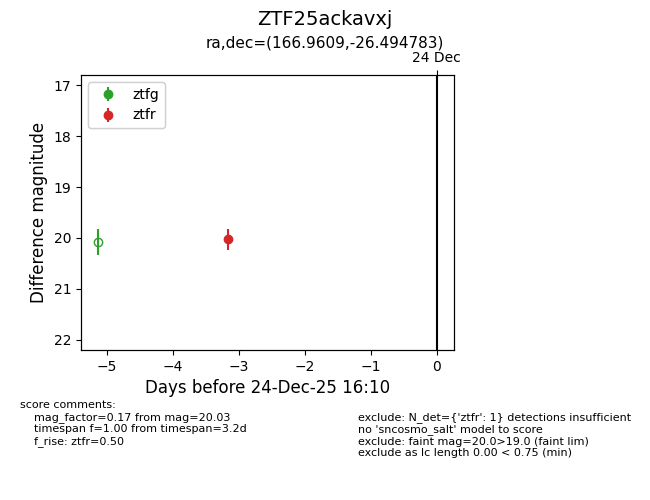
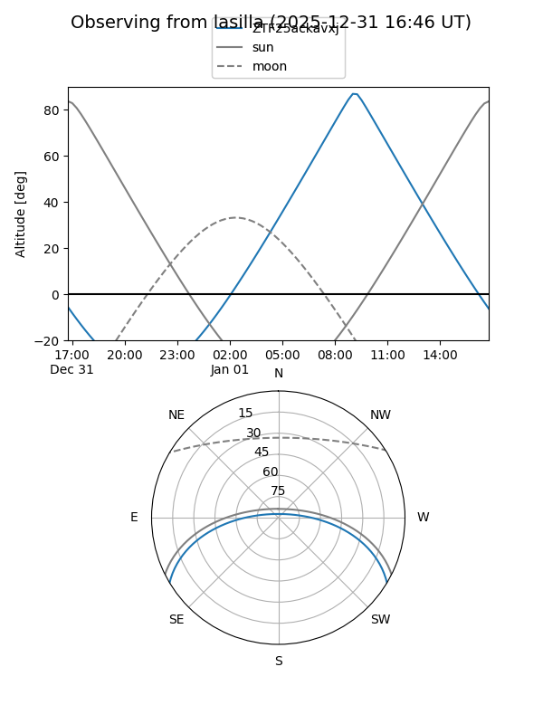
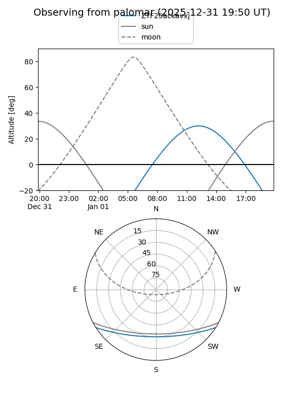

ZTF25ackavxj
Target ZTF25ackavxj at 2026-01-09 12:49
Aliases and brokers:
FINK: link
Lasair: link
ALeRCE: link
alt names
ZTF25ackavxj (ztf,fink_ztf)
Coordinates:
equatorial (ra, dec) = 166.9609,-26.49478
equatorial (HMS+DMS) = 11:07:50.62,-26:29:41.22
galactic (l, b) = (275.8395,+30.87054)
Flags:
Photometry:
last ztfr=20.03
1 ztfr detections
Lightcurve

Visibility


Additional plots